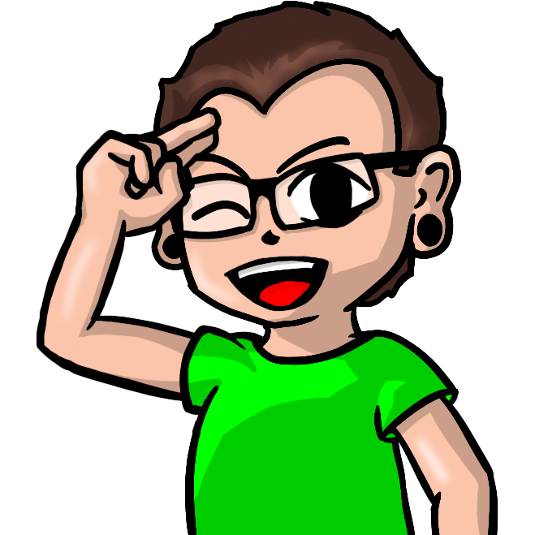

Sobre mim
Thiago Leoni Amaral
Desenhista e Desenvolvedor Front-End

Bem-vindo ao meu portfólio! Eu sou Thiago, um profissional com mais de 12 anos de experiência como desenhista e uma paixão em constante crescimento pelo desenvolvimento front-end.
Sobre Mim:
Com uma sólida formação e mais de uma década no mundo do desenho, desenvolvi uma visão única que combina criatividade e técnica. Minha jornada começou explorando diferentes estilos e técnicas artísticas, e ao longo dos anos, aprimorei meu domínio nas ferramentas Photoshop e Illustrator.
Desenhista:
A arte é minha linguagem, e cada traço conta uma história. Meu foco é transmitir emoções e criar experiências visuais memoráveis. Busco constantemente desafios que me permitam expandir meu repertório artístico.
Desenvolvedor Front-End:
No mundo do desenvolvimento web, estou na jornada de aprendizado constante. Já domino HTML e CSS, e estou na fase avançada do estudo de JavaScript. Minha abordagem combina a estética artística com a funcionalidade, buscando criar interfaces intuitivas e envolventes.
Conhecimentos Técnicos:
Além das habilidades essenciais, aplico meu conhecimento tecnológico para tornar meu trabalho mais prático. Tenho a capacidade de criar scripts e programas personalizados, agregando eficiência ao processo criativo e técnico.
Objetivos Futuros:
Estou comprometido em aprimorar minhas habilidades como desenvolvedor front-end, explorando novas tecnologias e aprofundando meu entendimento. Meu objetivo é ter autonomia nos meus projetos.
Contato:
Se você está em busca de um profissional com uma rica bagagem em desenho, combinada com uma abordagem inovadora no desenvolvimento front-end, estou aberto a novas colaborações. Entre em contato por alguma rede social. Obrigado por conhecer um pouco mais sobre mim. Estou ansioso para explorar novas oportunidades e contribuir para projetos desafiadores.